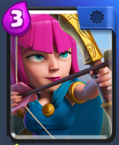

初心者におすすめのカード
No.1ジャイアント

- おすすめ理由
- クラロワで重要な形を組むことを覚えるためには最適だから
- 最初から獲得できるので、レベルが上がりやすい
No.2アーチャー

- おすすめ理由
- 前回のバランス調整で、攻撃速度が上がったことにより、3コストとは思えないような働きをするから
- 盾ユニットの後ろにいると、意外に厄介な存在だから
- ジャイアント同様に、最初から獲得できるので、レベルが上がりやすい
終わりに（どちらを押しても言葉は同じです）
クラロワ概要へ戻る
お気に入りカード紹介ページへ